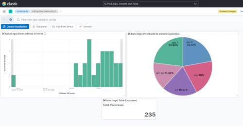
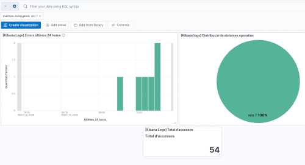
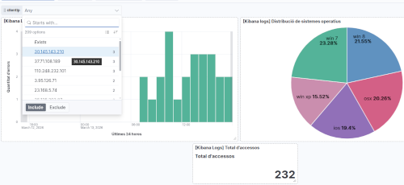

Pràctica guiada de creació de Dashboards en Kibana
Anem a fer una pràctica guiada pas a pas per crear un dashboard a Kibana. Utilitzarem un conjunt de dades de logs web de mostra que ve integrat amb Kibana, així no necessitarem configurar Logstash ni carregar dades externes.
Abans de començar
Alça els contenidors, comprova que estan tots funcionant.
Intenta accedir a Kibana a través de http://localhost:5601. Si tot està correcte, veuràs la interfície de Kibana. Si tens problemes per accedir, revisa els logs del contenidor (docker logs kibana) per identificar posibles errors. Si el problema és de permisos, segurament necessitaràs executar les instruccions de resetejar els passwords que tens en els apunts.
Pas 1 – Entra en Kibana i carrega les dades de mostra
- Obri el navegador
http://localhost:5601 - Ves al menú principal (☰) → Home
- Localitza la secció "Try sample data"
- Ves a 'Other sample data sets'
- Localitza el data set Sample web logs, fes clic en "Add data"
- Espera uns segons. Kibana crearà automáticament:
- Un índex anomenat
kibana_sample_data_logsen Elasticsearch - Un Data View ja configurat
- Un dashboard d'exemple amb diverses visualitzacions
- Un índex anomenat
Pots comprovar que tot ha anat bé:
- Ves a Stack Management → Data Views i verifica que tens un Data View per
kibana_sample_data_logs - Ves a Discover i selecciona el Data View
kibana_sample_data_logsper veure les dades de logs web - Ves a Dashboard i busca el dashboard de mostra que s'ha creat automàticament
Pots explorar com està fet el dashboard d'exemple i anar agafant idees. Nosaltres crearem el nostre, més senzill, des de zero.
Crear visualitzacions
Anem a crear una sèrie de visualitzacions bàsiques a partir del Data View kibana_sample_data_logs que després afegirem al nostre dashboard personalitzat.
Visualització 1: Errors per hora (Gràfic de barres / Bar)
- Ves a Analytics → Visualize Library
- Fes clic en Create visualization. Selecciona l'opció Lens (editor visual recomanat)
- En la part superior esquerra, selecciona el Data View
Kibana Sample Data Logs - Arrastra el camp
@timestampa la part central de la pantalla. Automàticament Kibana crearà un gràfic de barres. - En l'eix Y, si no ho ha fet per defecte, tria la mètrica Count (compta documents)
-
En la part superior esquerra, al costat del nom de l'índex, hi ha un botó amb un signe +. Si te situes sobre ell veuràs la legenda Add filter. Crea un filtre nou amb:
-
atribut:
response.keyword - condició:
is one of -
valors:
404503 -
Busca com canviar els títols dels eixos X i Y. Canvia el títol de l'eix X a
Últimes 24 horesi el de l'eix Y aQuantitat d'errors - En la part superior dreta, busca el botó per seleccionar l'interval de temps i selecciona
Last 24 hours. - Fes clic en Save. Com a títol, posa [Kibana Logs] Errors últimes 24 hores. En l'apartat
Add to dashboardseleccionaNone. Fes clic en Save and add to library.
Visualització 2: Distribució per Sistema Operatiu del client (Pastel / Pie)
- Crea una nova visualització
- Arrastra el camp
machine.os.keyworda la part central de la pantalla - Kibana lo convertirá en un Top values on mostrarà els 5 sistemes operatius més comuns. En la configuració del gràfic, a la dreta, pots canviar-ho i posar-ne més, si vols.
- Canvia el tipus de gràfic a Pie (pastel)
- Guarda la visualització amb el nom
[Kibana Logs] Distribució de sistemes operatius. No l'afegisques a cap dashboard, de moment.
Visualització 3: Métrica única (Total events')
- Crea una nova visualització
- Selecciona el tipus Metric
- En la mètrica principal, selecciona Count
- Canvia el títol de la mètrica a
Total d'accessos - Guarda la visualització amb el nom
[Kibana Logs] Total d'accessos'. Recorda no afegir-lo a cap dashboard.
Disseny del Dashboard
Ara anem a crear el Dashboard amb les tres visualitzacions que hem creat. També afegirem la cerca guardada de Discover que mostra els logs filtrats per errors 404 i 503.
- Ves a Dashboard en el menú lateral
- Fes clic en Create dashboard
- Ens dirà que està buit. Fes clic en Add from library
- Selecciona las tres visualitzacions creades:
[Kibana Logs] Errors últimes 24 hores[Kibana Logs] Distribució de sistemes operatius[Kibana Logs] Total d'accessos
- Pots Organitzar els components del dashboard canviant-los de lloc i també de tamany.
El resultat podria ser una cosa semblant a esta:

Crear filtres i controls interactius
Els filtres i controls fan que l'usuari puga interactuar amb el dashboard i fa que tinga més valor. Anem a veure com crear diferents tipus de filtres i controls.
Filtre temporal global
Dalt a la dreta podem modificar l'interval de temps que afecta a totes les visualitzacions del dashboard. Per exemple, podem seleccionar Last 7 days per veure les dades de la última setmana.
Filtre per clic
Si vas al gràfic de pastel i fas clic sobre un secció (un sistema operatiu), automàticament tot el dashboard canvia per filtrar només els documents del sistema operatiu seleccionat. Dalt a l'esquerra apareix el filtre, si voleu tornar a mostrar totes les dades feu clic en x i el filtre se borra.
Per exemple, si fem clic en Windows 7, veurem:

Fixeu-vos que dalt a l'esquerra teniu el filtre activat. El podeu eliminar fent clic en la x que hi ha al costat del filtre.
Afegir un Control (selector desplegable)
- Fes clic en Controls → Add control
- Selecciona Options list
- Tria un camp, per exemple
clientip. - Guarda el control i el dashboard.
Ara teniu un desplegable per filtrar per IP del client. Si seleccioneu una IP concreta, el dashboard mostrarà només les dades d'aquesta IP.

Búsquedes KQL global
En la part superior del dashboard teniu un quadre de text on podeu escriure consultes KQL que afecten a tots els panels. Quan feu clic en el quadre, se desplega un llistat amb tots els camps disponibles. Podeu seleccionar-ne un i posar una condició seguint la guia que vos apareix.
Guardar i compartir
- Per guardar el Dashboard, fem clic en Save (dalt a la dreta). Si és la primera vegada, li donem un nom.
-
A l'esquerra del botó Save, hi un botó de compartir. Vos ofereix 2 opcions:
-
Link: URL per compartir el dashboard amb altres usuaris de Kibana
- Embed code: codi HTML per incrustar el dashboard en una pàgina web externa
Exercici
Sobre el dashboard que hem dissenyat, intenta fer els següents canvis:
- Afegeix un gràfic de barres amb els codis de resposta més freqüents (
response.keyword) - Crea un mapa de calor o geogràfic amb el camp
geo.coordinatesper veure la distribució geogràfica dels logs
Reorganiza el dashboard per a que quede presentable i guarda-lo amb un altre nom. Per exemple,Exercici-Dashboard.